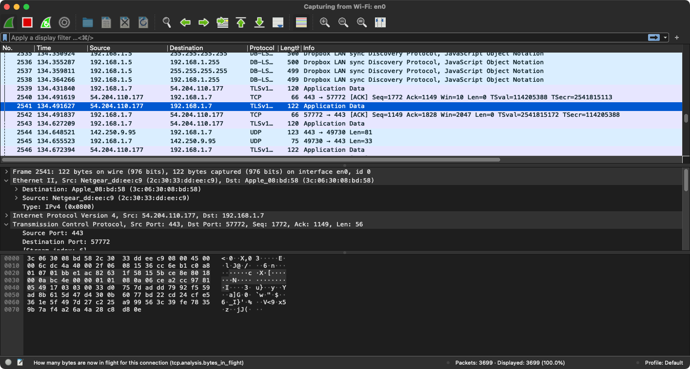

Networks
How things are connected
Contents
- Introduction
- IP Addresses
5 min - Domain Names
5 min - Basic Network Commands
5 min - Advanced Network Tools
5 min - Keep practicing
- References
Introduction
Review the following sections and perform the activities on your own or with your group.
Perform the task(s) when you see this 👉 emoji
Learning Objectives
Students who complete the following will be able to:
- Describe why the Domain Name System exists and what it does.
- List important concepts (IP Addresses, domain names, TCP/IP, etc.) essential to the the modern internet.
- Explain common situations when you might use
whoisorpingwhen doing web development. - Demonstrate how to use network-specific command line tools.
{kind=link}
{kind=link}
{kind=link}
A centralized, decentralized, and distributed network
IP Addresses
An Internet Protocol (IP) address is a numerical label used to identify and connect devices to the Internet. Assigned by your Internet Service Provider (ISP), it is required before your device can send data through the network.
👉 On Google, "what is my ip" will yield a number that looks like this:
24.224.66.226
IP Version 4 (IPv4) defines a dot-decimal number with four sections, each between 0-255.
1.1.1.1 => Cloudflare DNS server
8.8.8.8 => Google DNS server
192.168.1.1 => Default address to configure your home internet router
255.255.255.0 => Subnet mask used by TCP/IP to know if a host is local or remote.
Surprisingly, IPv4's 232 addresses were not enough for a constantly growing Internet and a new IPv6 standard was released in 1998 to increase the number to 2128!
IPv4 => 4,294,967,296
IPv6 => 340,282,366,920,938,000,000,000,000,000,000,000,000
Domain Names
A domain name is a human-readable name for an IP address or web host.
For example, use ping google.com to find their IP address: 64.233.177.104
While easier to recall than the numbers in an IP address, domain names must be resolved via the Domain Name System (DNS) to learn the IP address of the web host:
- User types a domain name into a web browser
- Browser performs a DNS query to find the IP address of the server
- Browser then requests website files using the server's IP
Basic Network Commands
The following network commands are essential for basic web development. Run them via the Command Line Interface (CLI) on any Linux, Mac, or Windows (🤞) command line.
- whois
- ping
- traceroute
- curl
- ssh
whois
Who owns this domain?
The whois system contains records about domain ownership. The Internet Corporation for Assigned Names and Numbers (ICANN) regulates domain name registration, but the records are held by many companies, known as registries.
Anyone can query the whois list receive details like:
- registrant - the legal domain owner and their contact information
- registrar - the company the registrant used to create the registration
- dates of the registration, including the first, most recent, and expiration date
- nameservers of the host to which the domain name points
👉 Try a whois search with the following names, and at least one additional domain. What do you notice?
whois davidson.edu
whois cnn.com
whois owenmundy.com
ping
How fast is my connection to this domain?
ping (Packet INternet Groper) checks network connectivity and latency (the time it takes data to move across a network in milliseconds (ms)) between two nodes.
It is a simple way to check your device's connection to the outside world. You can use ping with a domain name or IP address.
👉 Try it out
Ping Google's domain name. By default, ping will continue executing until you use Ctrl+C to interrupt the execution.
ping google.com
Ping Google's DNS server 5 times and then stop
ping -c 5 8.8.8.8
Run ping with different domains to compare speeds. Why might there be differences?
traceroute
What is the path to a domain?
The traceroute command is useful for network troubleshooting. It provides latency information and identifies each node along the path to the target destination.
👉 Try it out
Trace the path your packets take to a destination:
traceroute google.com
By default, traceroute uses UDP ports which are blocked by some firewalls. If your traceroute "hangs", try it with the ICMP port
traceroute -I google.com
curl
Save a file from the internet
curl (Client URL) is used to download network files via CLI.
👉 Try it out
To fetch a file and display it in the shell
curl https://davidson.edu
To fetch a file and save it on your computer
curl -o index.html https://davidson.edu
SSH
Secure SHell is a popular tool for connecting to other computers on the network. With "SSH" you log in to a remote computer and can execute commands just as if you were in the same room. SSH uses public-key cryptography to secure data.
Common scenarios where you would use SSH:
- To edit files on a web server
- To edit contents of a database on a server
- To pull changes to a Git repository on your web server
👉 Try it out
If you know your username and password, and are permitted to connect via SSH to your host, then try it out. The first time you connect you will be prompted to trust the secure key on the remote host and enter your password*.
ssh <username>@<servername>
If successful you'll see a welcome message. You could then edit a file using the Nano text editor. This command will open a file to edit (creating the file if it doesn't currently exist):
nano hello.html
Use Ctl + o to save and Ctl + x to exit nano.
Advanced Network Tools
SFTP
SFTP (Secure File Transfer Protocol) allows you to send files across a network with the command line. It is usually more convenient to use a GUI like Cyberduck.
👉 To create an SFTP connection type the following.
sftp <username>@<servername>
To "put" a file simple type: put <local_filename> at the sftp> prompt like so:
sftp> put hello.jpg
dig
Just give me the nameservers
dig (Domain Information Groper) is used in DNS lookup to query the nameservers, or troubleshoot related DNS issues. It returns info on the A record by default.
dig davidson.edu
If you want all records including MX (email) and NS (nameservers):
dig google.com ANY
ifconfig
The InterFace CONFIGurator is used to inspect, configure, and/or enable/disable network interfaces.
👉 Print your MAC (Media Access Control) address. This is a unique identifier assigned to each network interface controller on your system (e.g. ethernet, WiFi, and bluetooth).
ifconfig | grep ether
👉 Print your IP address
ipconfig getifaddr en0
ifconfig reports your device address on your subnet (something like 192.168.*.*). Use an site on the internet to see the IP address that you connect from.
ifconfig en0
Netstat
netstat (NETwork STATistics) displays information about TCP, routing tables, and all virtual connections to/from your computer. TCP/IP is the set of communications protocols used to transfer data over the Internet and similar computer networks. The current protocols are Transmission Control Protocol (TCP) and Internet Protocol (IP).
👉 To view a list of all the network interfaces (a.k.a. "sockets") on your machine:
netstat -at
View statistics for network interfaces
netstat -i
Tcpdump
tcpdump is a network package analyzer. It can be used to monitor network activity or even capture data packets.
To prevent others from viewing your network activity without permission (a.k.a. a Man in the Middle attack) this command must be run with sudo (Super User DO) permission using your password.
👉 To view all your network activity in real time, run the following. Use Ctl + c to exit:
sudo tcpdump -nS
Wireshark
Wireshark can inspect network packets with a GUI.
👉 Mac users can install it using this script (via homebrew)
brew install --cask wireshark
Windows users should install from the Wireshark website.
 Wireshark showing incoming/outgoing data packets
{kind=link}